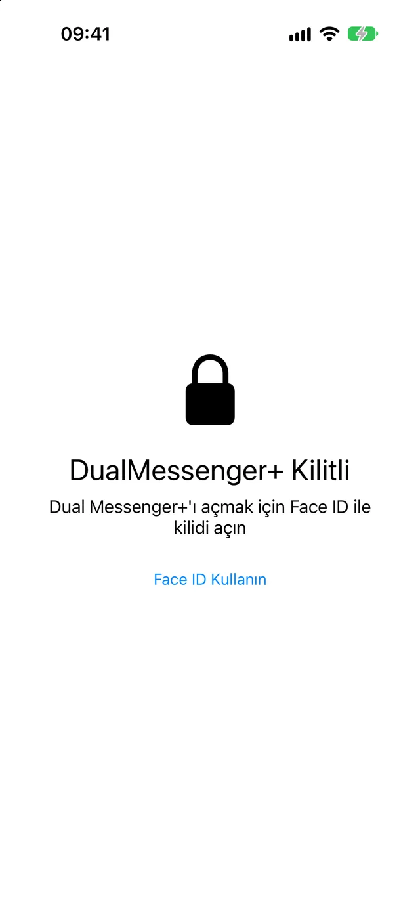
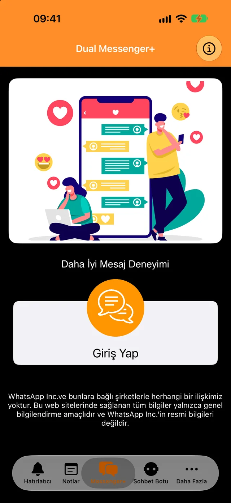
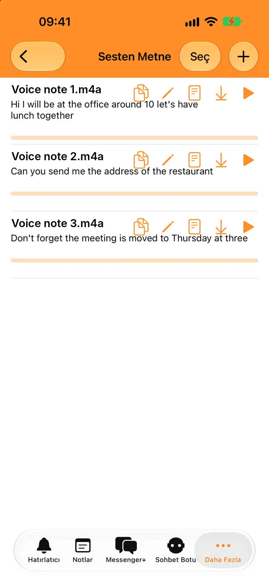
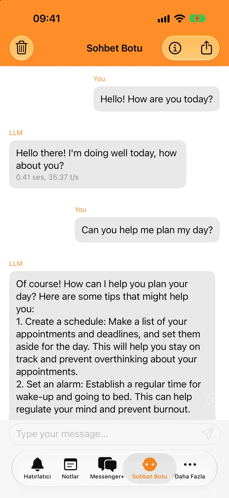
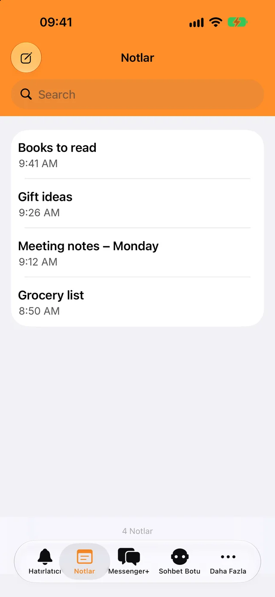

Face ID veya şifreyle kilitleyin
Uygulamayı ve sohbetlerinizi yalnızca siz açabilirsiniz. Hemen mi yoksa birkaç dakika sonra mı kilitleneceğini siz seçin.
İkinci hesabınızı saniyeler içinde ekleyin; iş ve özel sohbetlerinizi ayrı tutun.
İndirmesi ücretsiz. iPhone, iPad ve iPhone Duo için.

Sohbetleriniz için bir kilit ve her gün işinize yarayacak birkaç araç, hepsi aynı uygulamada.

Uygulamayı ve sohbetlerinizi yalnızca siz açabilirsiniz. Hemen mi yoksa birkaç dakika sonra mı kilitleneceğini siz seçin.

Sesli mesajları ve ses dosyalarını kendi dilinizde yazıya dökün, metni istediğiniz yere kopyalayın.

Hızlı sorular sorun, internet olmadan bile. Botla yaptığınız sohbetler telefonunuzdan çıkmaz.

Aklınızdakileri yazın, aramayla bulun; hatırlatıcının zamanı gelince bildirim alın.
İkinci WhatsApp hesabınızın bulunduğu telefon yalnızca kısa bir süreliğine gerekir.
Giriş Yap’a dokunun. Ekranda bir QR kodu belirir.
Ayarlar’a, ardından Bağlı Cihazlar’a gidin ve Cihaz Bağla’ya dokunun.
O telefonu QR koduna doğrultun. Sohbetleriniz Dual Messenger+’ta açılır.
Telefonunuzda WhatsApp’ı en az 14 günde bir kullandığınız sürece WhatsApp, bağlı cihazdaki oturumu açık tutar.
Dual Messenger+’ın mesajlarınızı gören sunucuları yoktur. Hesap oluşturmanız gerekmez; uygulamada reklam ya da izleyici bulunmaz.
Notlar, hatırlatıcılar, kayıtlar ve bot sohbetleri iPhone veya iPad’inizde saklanır.
Bize ad, e-posta adresi ya da telefon numarası vermezsiniz.
Face ID ve Touch ID işlemlerini cihazınız yürütür. Uygulamaya hiçbir zaman biyometrik veri ulaşmaz.
Dual Messenger+’ı iPhone ve iPad’inize indirin.
App Store’dan indirinUygulamayla ilgili bir sorunuz, fikriniz ya da sorununuz mu var? Bize yazın.
info@dualmessengerplus.com